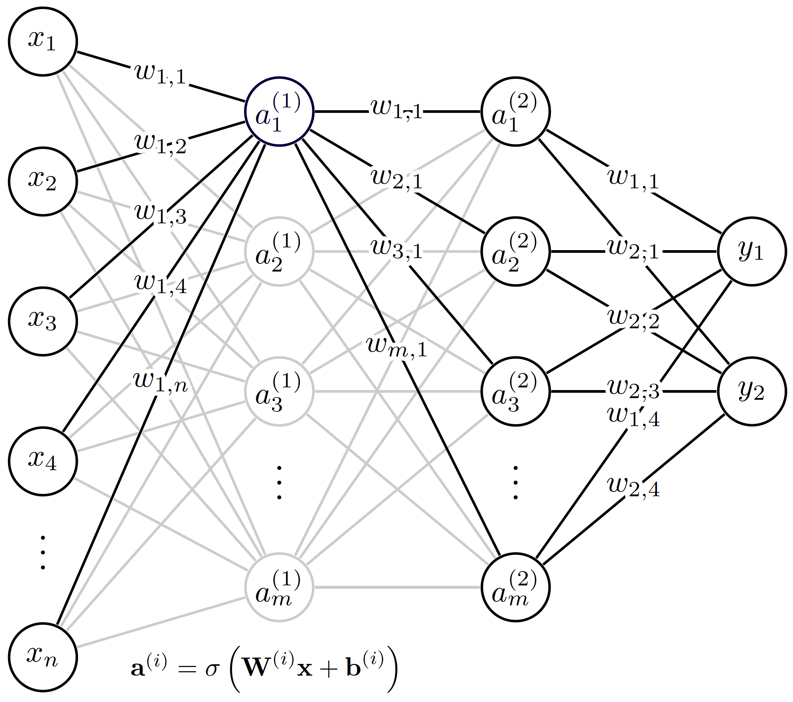

LibtorchArtificialNeuralNet
Overview
This class can be used to generate a simple, feedforward artificial neural network (ANN) using the underlying objects imported from libtorch (C++ API of pytorch). Note: to be able to use these capabilities, MOOSE needs to be installed with libtorch support. For more information, visit the installation instuctions on the MOOSE website. For a more detailed introduction to neural networks, we refer the reader to Müller et al. (1995). The architecture of a simple feedforward neural network is presented below. The first layer from the left to the right are referred to as input and output layers, while the layers between them are the hidden layers.

Figure 1: The architecture of the simple feedforward neural network in MOOSE-STM.
We see that the outputs () of the neural net can be expressed as function of the inputs () and the corresponding model parameters (weights , organized in weight matrics and biases organized in the bias vector ) in the following nested form:
(1)where denotes the activation function. At the moment, the Moose implementation supports relu, elu, gelu, sigmoid and linear activation functions. In this class, no activation function is applied on the output layer. It is apparent that the real functional dependence (target function) between the inputs and outputs is approximated by the function in Eq. (1). As in most cases, the error in this approximation depends on the smoothness of the target function and the values of the model parameters. The weights and biases in the function are determined by minimizing the error between the approximate outputs of the neural net corresponding reference (training) values over a training set.
Example usage
To be able to use this neural network, we have to construct one using a name, the number of expected input and output neurons, an expected hideen-layer-structure and the activation functions for the layers. If no activation function is given, relu is used for every hidden neuron:
// Define neurons per hidden layer: we will have two hidden layers with 4 neurons each
std::vector<unsigned int> num_neurons_per_layer({4, 4});
// Create the neural network with name "test", number of input neurons = 3,
// number of output neurons = 1, and activation functions from the input file.
std::shared_ptr<Moose::LibtorchArtificialNeuralNet> nn =
std::make_shared<Moose::LibtorchArtificialNeuralNet>(
"test",
3,
1,
num_neurons_per_layer,
getParam<std::vector<std::string>>("activation_functions"));
For training a neural network, we need to initialize an optimizer (ADAM in this case), then supply known input-output combinations for the function-to-be-approximated and let the optimizer set the parameters of the neural network to ensure that the answer supplied by the neural network is as close to the supplied values as possible. Once step in this optimization process is shown below:
// Create an Adam optimizer
torch::optim::Adam optimizer(nn->parameters(), torch::optim::AdamOptions(0.02));
// reset the gradients
optimizer.zero_grad();
// This is our test input
torch::Tensor input = at::ones({1, 3}, at::kDouble);
// This is our test output (we know the result)
torch::Tensor output = at::ones({1}, at::kDouble);
// This is our prediction for the test input
torch::Tensor prediction = nn->forward(input);
// We compute the loss
torch::Tensor loss = torch::mse_loss(prediction.reshape({prediction.size(0)}), output);
// We propagate the error back to compute gradient
loss.backward();
// We update the weights using teh computed gradients
optimizer.step();
For more detailed instructions on training a neural network, visit the Stochastic Tools module!
References
- Berndt Müller, Joachim Reinhardt, and Michael T Strickland.
Neural networks: an introduction.
Springer Science & Business Media, 1995.[BibTeX]